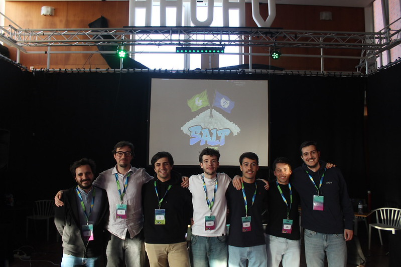
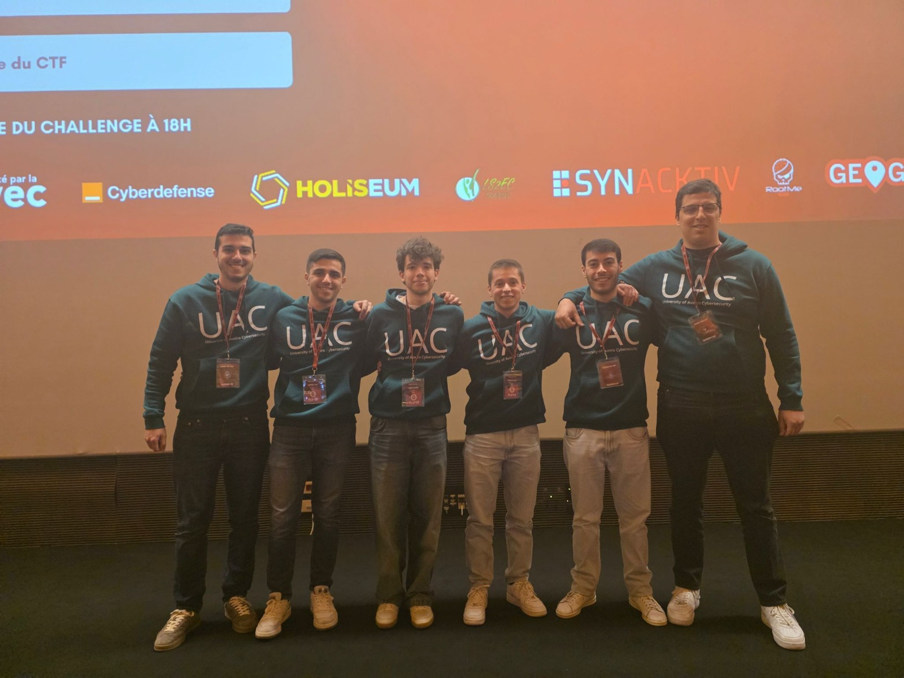
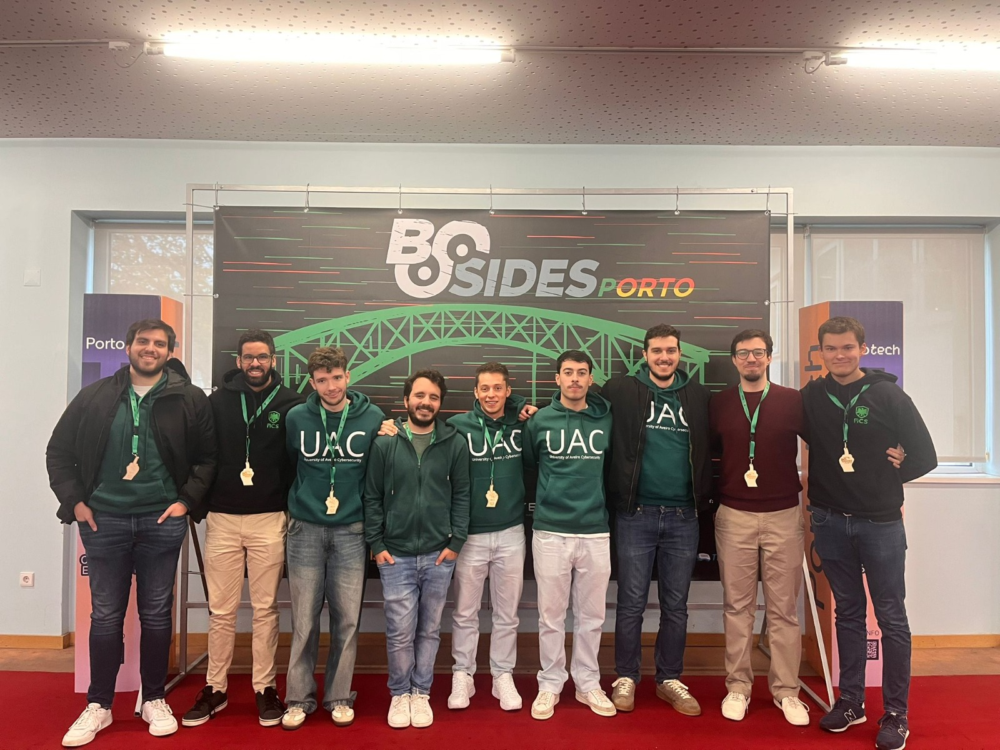
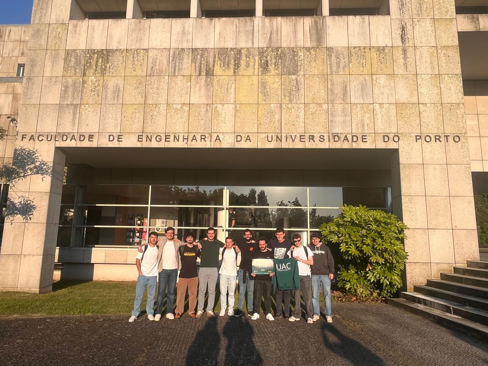

Reverse Engineering
- Static & dynamic binary analysis
- Multi-architecture disassembly
- Malware
- Android
- Emulation-driven analysis
I'm Tomás Matos, a cybersecurity graduate from the University of Aveiro, Portugal, passionate about understanding systems from the network level down to the binary, with a special interest in reverse engineering, malware analysis, binary exploitation, web security, and applied cryptography.
During my two years in the Cybersecurity Master's program, I developed a strong foundation in offensive security by competing in CTFs and solving hands-on challenges on platforms like picoCTF to build practical exploitation skills. At the same time, I explored defensive security and architecture design, focusing on threat modeling and secure solution engineering, as demonstrated in my Master's thesis using a Trusted Execution Environment (TEE) to anchor a secure application.
I also hold a Bachelor's degree in Software Engineering from the University of Aveiro. Building a strong foundation in computer science, networking, software development, and testing. It was what initially sparked my passion for cybersecurity!
University of Aveiro · DETI
2024 – 2026
University of Aveiro
2021 – 2024
Certified Binary Fuzzing & Reversing Professional
Hands-on fuzzing methodology, AFL++ instrumentation, persistent-mode harnesses, crash triage, and binary reversing.
API Security Certification
Hands-on REST API security analysis, vulnerability identification, OWASP API Top 10 mitigation, and secure design practices.
English Language Proficiency
Certified English language proficiency qualification demonstrating advanced communication skills in professional environments.
CTFs are where I sharpen my practical edge, mostly focused on reverse engineering, pwn, cryptography, and binary analysis.

Organizer & Challenge Author

13th place

5th place

3rd place 🥉
The First International Conference on Security and Cybersecurity in the AI and Digital Context (CYBERSEC 2026)
Open to security roles and interesting collaborations.
Best way to reach me: